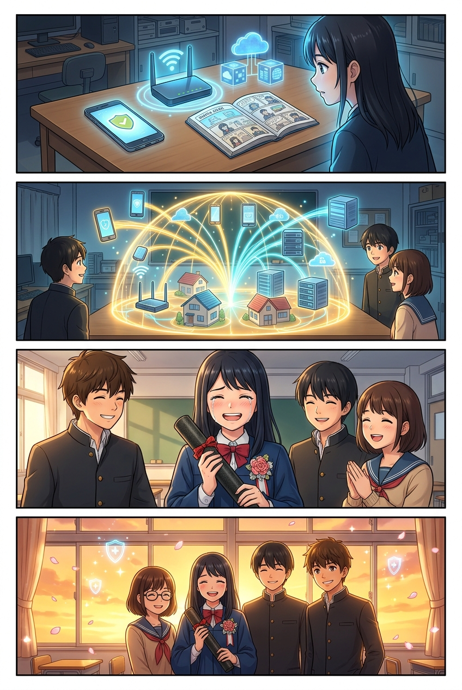
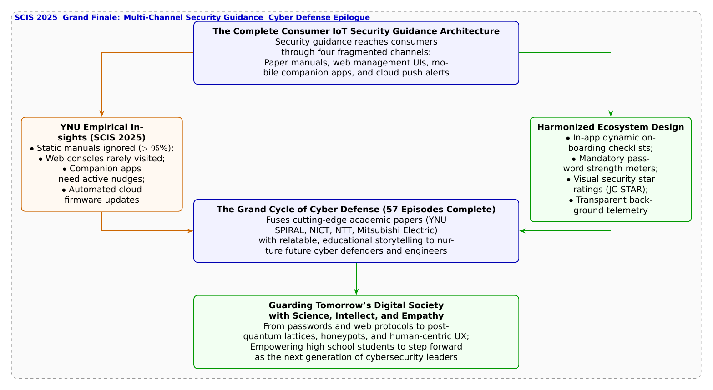

🎨 4コマ漫画挿絵（文字なし）
AI高解像度生成
▲ 【挿絵】青葉台高校 情報科学部＆帝都科学大学サイバーディフェンス・ラボでの実践シーン
💬 4コマ漫画キャラクターセリフ (Story Dialogue Script)
日・英バイリンガル (JA / EN)[悠真]「まさにその問いに答えたのが、横浜国大SPIRALとNTTのSCIS 2025最新研究だよ」
[Yuma] "Answering that very question is YNU SPIRAL & NTT's latest SCIS 2025 research!"
[蓮]「機器そのものの自動アップデートと、人に寄り添うUI/UXが合わさって初めて、家庭の安全が完成するんだね！」
[Ren] "Combining automated background updates with empathetic human-centered UX truly completes home defense!"
[葵]「えへへ……最初はパスワードすら適当だった私が、こんなに頼もしい仲間と世界を守る楽しさを知ることができたよ！」
[Aoi] "Ehehe... From someone who used terrible passwords, I learned the joy of guarding the world with incredible friends!"
[全員]「科学と数学、そして人の温もりを胸に……私たちは未来のサイバー空間の守護者です！」
[All] "Armored with science, mathematics, and human empathy... we are the guardians of tomorrow's cyberspace!"
📖 小説本文
冬の柔らかな光が差し込む青葉台高校の情報科学部室。卒業式を間近に控えた黒板には、部員たちが描いた色とりどりの桜のイラストと、「葵先輩、ご卒業おめでとうございます！」という温かいメッセージが躍っていた。
机の上には、橘葵の制服の胸元に付けられたコサージュと、丸められた卒業証書の筒が静かに置かれている。
「……葵先輩、この机を見てください」
神崎蓮が、机の上に四つのアイテムを並べた。 一つ目は、箱から出されたばかりの分厚い「紙の取扱説明書」。 二つ目は、ルーターのIPアドレスを打ち込んで開く「Webブラウザ管理画面」。 三つ目は、初期設定に使った「スマートフォンのコンパニオンアプリ」。 そして四つ目は、クラウドから届く「プッシュ通知とメール通知」だ。
「第44話で、スマホアプリの過半数がファームウェア更新のメッセージを出していないというショッキングな現実を学びましたよね」蓮が振り返る。
「うん」葵が頷く。「紙の説明書なんて誰も読まないし、Webの管理画面なんて普通の人は一度設定したら二度と開かない。スマホアプリも『使いやすさ』ばかり優先して大事なパスワードの警告を隠しちゃう……。これじゃあ、普通の人が家庭のIoTを安全に使い続けるのって、無理ゲーじゃないかって思っちゃったよ」
白石結衣が、優しく微笑みながら首を横に振った。
「いいえ葵先輩。その絶望を希望へと変えるための処方箋を打ち出したのが、横浜国立大学SPIRALの**佐々木貴之准教授、秋山満昭客員教授（NTT社会情報研究所）、吉岡克成教授ら**による、2025年1月の暗号と情報セキュリティシンポジウム（SCIS 2025）の研究なのです」
「研究チームは」と結衣は黒板に大きな同心円を描いた。
「メーカーからユーザーへと届けられるすべての連絡経路――マニュアル、WebUI、スマホアプリ、クラウド通信を別々のものとして捉えるのではなく、**『マルチチャネル（多角的な経路）を通じたセキュリティガイダンスの統合エコシステム』**として体系的に調査・再設計しました」
部室のドアが開き、スーツ姿の城崎悠真が花束を抱えて入ってきた。大学1年としてSPIRALで研究を重ねてきた悠真の表情には、一年前の高校生の頃よりも凛とした風格が漂っていた。
「悠真先輩！」葵がパッと顔を輝かせる。
「葵ちゃん、卒業おめでとう」悠真が花束を手渡しながら微笑んだ。
「悠真先輩、そのマルチチャネルの統合って、具体的にどうやって人を守るんですか？」葵が尋ねる。
「人は、無理やり『勉強しなさい』と言われても動かない」悠真が静かに語り始めた。
「初期設定の段階では、スマホアプリが『安全なパスワード設定』をゲーム感覚で楽しく誘導する。機器の稼働中は、ユーザーの手を煩わせることなく、クラウドとファームウェアが自動でセキュリティパッチを適用する（自動更新）。そして万が一、家庭内で不審な通信が発生した時だけ、スマホに分かりやすい言葉で『〇〇のカメラの接続を確認してください』と通知を届けるんだ」
蓮が大きく頷いた。
「人を責めるのではなく、システム全体が人に寄り添って、自然と安全な道へと導く（ナッジする）……。これこそが、最先端のヒューマン・コンピュータ・インタラクション（HCI）とセキュリティUXが目指す答えなんだね！」
葵は手元の卒業証書を見つめ、胸いっぱいに広がる想いを噛み締めた。
「私ね……3年前、この部室のドアを初めて開けた時は、パスワードの使い回しが危ない理由すら知らなかったの。でも、悠真先輩に認証の仕組み（第1話）を教えてもらって、蓮くんとルーターやハードウェアの深淵（第16話〜）を探検して、結衣ちゃんと暗号の美しい数理（第33話〜）に触れて……」
葵の大きな瞳に、温かい涙が滲んだ。
「サイバーセキュリティって、ただコンピューターを守るだけの冷たい技術じゃないんだって分かったよ。インターネットの向こう側にいる、誰かの大切な日常や笑顔を守るための……世界で一番優しい盾なんだね」
結衣が葵の手を優しく握り、蓮が力強く頷いた。
「葵先輩が灯してくれたこの部室の明るさと勇気の炎は、僕たち後輩が絶対に絶やさずに引き継ぎます！」
「ええ。第1話から紡がれてきた全57話の学びは、高校の部室を越え、大学へ、そして世界中の未来のディフェンダーたちへと確かに受け継がれていきます」
夕暮れの茜雲が、横浜の海と青葉台の街を黄金色に染め上げていく。
窓辺に並んだ4人の瞳には、パスワードから暗号、クラウド、AI、ハニーポット、耐量子格子、そして人の心を守るセキュリティまで、あらゆる知恵を胸に抱いた確かな誇りと、未来への果てしない希望が輝いていた。
高校の小さな部室から始まった冒険は、いま、未来のデジタル社会を照らす永久の門出を迎えたのだった。
（放課後サイバーディフェンス・ラボ 全57話・堂々完結）
---
📊 セキュリティ構造図解 (TikZ LuaLaTeX生成)
国家安全基準・工学図解
▲ 【技術構造図】IPAデジタルスキル標準・国際規格に準拠した仕組みのモデル化